Generative Modeling
Spring School 2017

Table of Contents
- What is Generative Modeling?
- A Detour into Statistical Estimation Theory
- Generative Taxonomy
- Examples Tractable + Explicit Density Models [Brief]
- Examples Tractable + Approximated Density Models: VAE
- Implicit Density Model: GAN
What is a Generative Model?
Given $X = \{x_i\}_{i=0}^M \in \mathcal{R}^{N \times M}$ and $Y = \{y_i\}_{i=0}^M \in \mathcal{R}^{N\times1}$
- a generative model learns learns a joint distribution $P(X, Y)$.
- a discriminative model on the other hand learns a conditional distribution $P(Y|X)$.
Unsupervised Generative Modeling
Given $X = \{x_i\}_{i=0}^M \in \mathcal{R}^{N \times M}$ distributed as $P(X)$ (unknown), an unsupervised generative model learns a approximation $P_{\theta}(X)$
Why Learn Generative Modeling?
- Generative time series models can be utilized to predict the future.
- Has the ability to fill in missing data: semi-supervised learning for example where some labels are missing or image inpainting
- GAN's for example allow the learning of multi-modal distributions; minimizing the mean squared error in comparison cannot learn to produce multipthele correct answers (Goodfellow NIPS 2016)
- Unsupervised learning, denoising, super-resolution, compression, etc
What are we interested in?
Given a generative model $Q$ from a class $\mathcal{Q}$ of possible models:
- Sampling: produce a sample from $Q$
- Estimation: given IID samples $\{x_1, x_2, ... x_N\}$ from an unknown true distribution $P$, find $Q \in \mathcal{Q}$ that best describes the true distribution
- Point-wise likelihood evaluation: Given a sample $x$, evaluate $Q(x)$
(inference.vc)
When not to use a Generative Model?
"one should solve the [classification] problem directly and never solve a more general problem as an intermediate step [such as modeling P(X|Y)]." (Vapnik 1998)
"even though the discriminative logistic regression algorithm has a lower asymptotic error, the generative naive Bayes classifier may also converge more quickly to its (higher) asymptotic error. Thus as the number of training examples is increased, one would expect generative naieve Bayes to initially do better, but for discriminative logistic regression to eventually catch up to, and quite likely overtake, the performance of naive Bayes" (Ng, Andrew et. al 2002)
A Detour into Statistical Estimation Theory
Unbiased Estimator
An estimator $\hat{\theta}$ is said to be unbiased if: $$\mathbb{E}(\hat{\theta}) = \theta \ \ \ , a < \theta < b$$ where (a, b) denotes the range of possible values of $\theta$
- However, this does not mean that the estimate is a good estimate
- Example on next slide
Example: DC level in noise
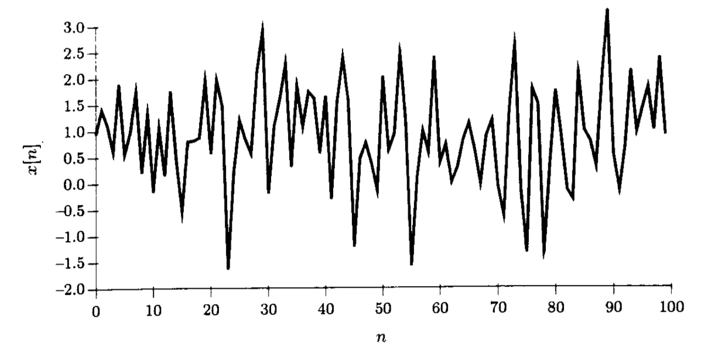$x[n] = A + w[n]$
- Goal: estimate true A with an estimator $\hat{A}$
- Examing two possible solutions:
- $\hat{A}_0 = x[0]$
- $\hat{A}_1 = \frac{1}{N}\sum^{N-1}_{n=0} x[n]$
Example: DC level in Noise
- $\mathbb{E}(\hat{A}_0) = \mathbb{E}(\frac{1}{N}\sum^{N-1}_{n=0} x[n]) = A$
- $\mathbb{E}(\hat{A}_1) = \mathbb{E}(x[0]) = A$
- var($\mathbb{E}(\hat{A}_0)$) = $\frac{\sigma^2}{N}$ < var($\mathbb{E}_1$) = $\sigma^2$
Minimum Variance Unbiased Estimator
Even if a MVU estimator exists, we may not be able to find it, we can still try the following:
- Determine Cramer-Rao lower bound and check if estimator satisfies it
- Apply the Rao-Blackwell-Lehmann-Scheffe theorem
- Try to restrict class of estimators to not only be unbiased but linear and apply BLUE
CRLB: Cramer-Rao Lower Bound
$var(\hat{\theta}_i) \geq [I^{-1}(\theta)]_{ii}$
- Assumes "regularity" conditions: $$\mathbb{E}\bigg[\frac{\delta \ ln\ p(X;\theta)}{\delta \ \theta} \bigg] = 0\ \ \ \forall \theta$$
- Assumes stationary distribution
- There are works that try to handle the non-linear / non stationary case case ( P. Tichavsky et. al 1998, R. J. Ober 2002)
- There exists an Asymptotic CRLB for gaussian processes that are any WSS (Kay, Steven 1993)
CRLB: Continued
$var(\hat{\theta}_i) \geq [I^{-1}(\theta)]_{ii}$
- If problem can be re-written as: $\frac{\delta \ ln\ p(X;\theta)}{\delta \ \theta} = I(\theta)(g(X)-\theta)$
- The MVU estimator is $\hat{\theta} = g(X)$
- Minimum variance is $I^{-1}(\theta)$
Sufficient Statistics
$P(X|T(X); \theta) = P(X|T(X))$
Neyman-Fisher factorization: $p(X;\theta) = g(T(X), \theta)h(X)$
- If we can factor the PDF $p(X;\theta)$ as shown above, where g is a function depending only on X only through $T(X)$ and h is a function depending only on X then $T(X)$ is a sufficient statistic for $\theta$
- Converse holds: i.e. if $T(X)$ is a sufficient statistic then the PDF can be factored as above
- when using likelihood-based inference, two sets of data yielding the same value for the sufficient statistic $T(X)$ will always yield the same inferences about $\theta$
Rao-Blackwell-Lehmann-Scheffe
If $\bar{\theta}$ is an unbiased estimator of $\theta$ and $T(X)$ is a sufficient statistic for $\theta$, then $\hat{\theta} = \mathbb{E}(\bar{\theta}|T(X))$ is:
- a valid estimator for $\theta$ (not dependent on $\theta$)
- unbiased
- of lesser or equal variance than that of $\bar{\theta}$, for all of $\theta$
- additionally, if the sufficient statistic is complete, then $\hat{\theta}$ is the MVU estimator
Classical Estimation Theory: Flowchart
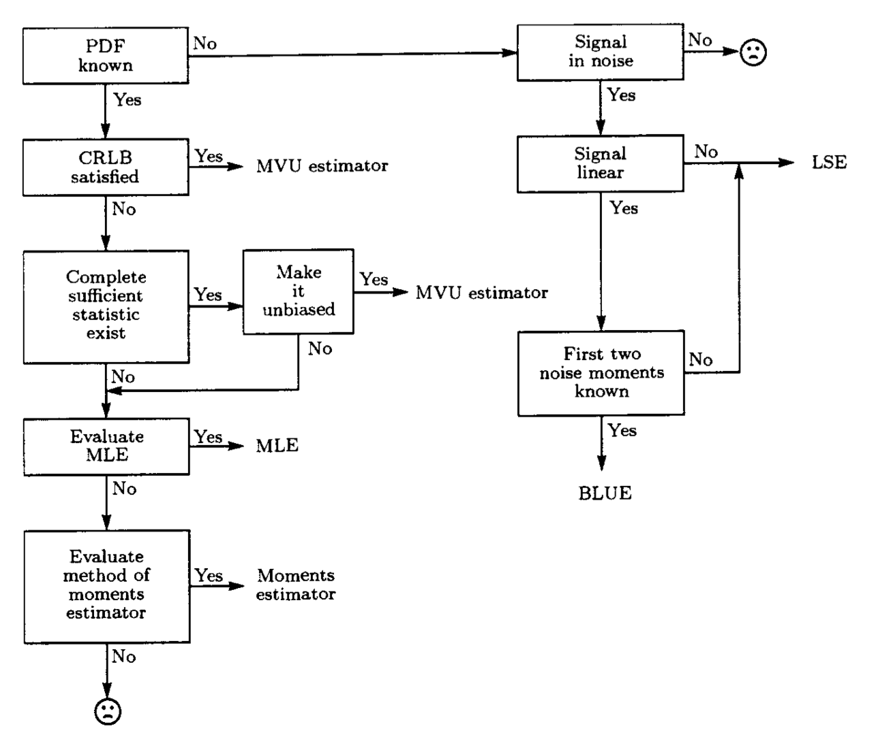(Statistical Signal Processing - Estimation Theory, M. Kay)
Maximum Likelihood Estimation
\begin{align} \theta^* &= \underset{\theta}{arg\ max} \prod_{i=1}^N p_{model}(x^{(i)}; \theta) \\ &= \underset{\theta}{arg\ max} \ log \ \prod_{i=1}^N p_{model}(x^{(i)}; \theta) \\ &= \underset{\theta}{arg\ max} \sum_{i=1}^N \ log \ p_{model}(x^{(i)}; \theta) \\ \end{align}
- Principle of maximum likelihood is to choose the parameters for the model that maximize the likelihood of the training data.
Maximum Likelihood: An alternate interpretation
$\theta^* = \underset{\theta}{arg\ min\ } D_{KL}[p_{data}(x) || p_{model}(X; \theta)]$
- If we were able to do this precisely, then if $p_{data}$ lies within the family of distributions $p_{model}$, the model would recover $p_{data}$ exactly.
- We generally do not have $p_{data}$
- Only have access to $N$ samples; define $\hat{p}_{data}$ (the empirical distribution)
- Generally minimize the KL between $\hat{p}_{data}$ and $p_{model}$
MAP Estimation
\begin{align} \theta^* &= \underset{\theta}{arg\ max\ } p_{model}(\theta | X) \\ &= \underset{\theta}{arg\ max\ } \frac{p_{model}(X|\theta)p(\theta)}{p(X)} \\ &= \underset{\theta}{arg\ max\ } p_{model}(X|\theta)p(\theta) \end{align}
- $p(\theta)$ is the prior PDF summarizing our knowledge about $\theta$ before any data are observed
- $p(X|\theta)$ is a conditional PDF summarizing our knowledge provided by the data conditioned on knowing $\theta$
Taxonomy of Unsupervised Generative Models

(Goodfellow NIPS 2016)
Tractable + Explicit Density: FVBN
$$p_{model}(x) = \prod_{i=1}^{N} p_{model} (x_i | x_1, x_2, ..., x_{i-1})$$
- The FVBN (Fully Visible Belief Network) (Frey et al.,1996; Frey, 1998) utilize the chain rule to decompose a probability distribution over an n-dimensional vector x into a product of one-dimensional distributions (Goodfellow NIPS 2016)
Tractable + Explicit Density: FVBN
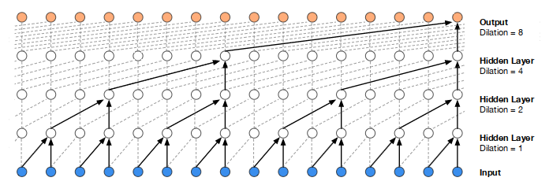(van den Oord et. al 2016)
Tractable + Explicit Density: Non-Linear ICA
$$p_x(x) = p_z (g^{-1}(x)) \bigg{|} det \left( \frac{\delta g^{-1}(x)}{\delta x} \right) \bigg{|} $$
- assumes vector of latent variables $z$
- assumes existence of continuous, differentiable, invertible function $g(z)$
- requires tractable density $p_z$, tractable determinant of Jacobian of $g^{-1}$
- $g(z)$ yields a sample from the model in $x$ space
TLDR: a simple distribution over $z$ combined with a transformation $g$ that warps space in complicated ways can yield a complicated distribution over $x$ (Dinh et al., 2016, Deco and Brauer 1995)
Explicit Models that require Approximations
Provide density explicit functions, but use one that is intractable.
- Variational approximations such as the VAE; mean field inference
- Minimize the variational lower bound (AKA ELBO): $\mathcal{L}(x;\theta) \leq log\ p_{model}(x;\theta)$
- MCMC approximations: $x' \sim q(x' | x)$
Understanding Variational Approximations
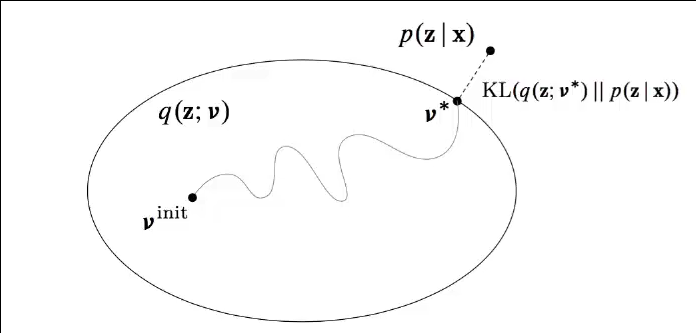(VI Tutorial NIPS2016 Blei et. al)
ELBO From Importance Sampling
\begin{align} log\ p(x) &= log\ \int p(x|z)p(z)dz \\ &= log\ \int p(x|z)p(z)\frac{q(z)}{q(z)}dz \\ &= log\ \int p(x|z)q(z)\frac{p(z)}{q(z)}dz \\ log\ p(x) &\geq \int q(z)log\bigg(p(x|z)q(z)\frac{p(z)}{q(z)}\bigg)dz \\ &= \int q(z)log(p(x|z))dz - \int q(z)\frac{q(z)}{p(z)}dz \\ &= \mathbb{E}_{q(z)} [log\ p(x|z)] - KL[Q(z)||P(z)] \end{align}
ELBO From KL
\begin{align} KL[Q(z)||P(Z|X)] &= \mathbb{E}_{z\sim Q}[log\ q(z) - log\ p(z|x)] \\ &= \mathbb{E}_{z\sim Q}[log\ q(z) - log\ p(x|z) \\ &\ \ \ \ \ - log\ p(z)] + log\ p(x) \\ log\ p(x) &= \mathbb{E}_{z\sim Q} [log\ p(x|z)] \\ &\ \ \ \ \ - KL[Q(z|x)||P(z)] \\ &\ \ \ \ \ + KL[Q(z|x) || P(z|x)]\\ \end{align}
ELBO from expectation over marginal
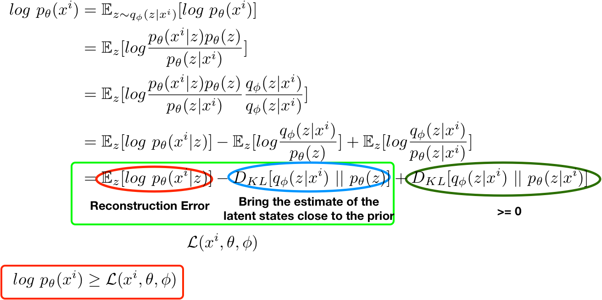Variational Lower Bound
$$ \begin{align} \begin{split} &log\ p(x) - KL(Q_{\theta^e}(Z|X)\ ||\ P(Z|X)) \\ &= E_{x \sim D}[E_{z \sim Q} [log\ p_{\theta^d}(x | z)] \\ &\ \ \ \ \ \ \ \ \ \ \ \ \ \ \ -KL(Q_{\theta^e}(Z|X)\ ||\ P(Z))] \end{split} \end{align} $$- $log\ p_{\theta^d}(x | z)$ : amount of information required to reconstruct X from Z under an ideal encoding.
- $log\ p(x)$ : number of bits required to construct X under our model using an ideal encoding
- $KL(Q_{\theta^e}(Z|X)\ ||\ P(Z))$ : the 'extra' information we get about $X$ when $Z$ comes from $Q_{\theta^e}(Z|X)$ instead of $P(Z)$
- $KL(Q_{\theta^e}(Z|X)\ ||\ P(Z|X))$ : Pentaly for our estimate $Q_{\theta^e}$ being sub-optimal
Classical VI Recipe

Blei et. al NIPS 2016
Exercise: VI for Bayesian Logistic Regression
- For simplicity let's work with one data point: $(y, x)$
- Bayesian version puts a prior on the regression coefficient z
- Let's assume z is distributed as a unit gaussian: $p(z) \sim \mathcal{N}(0, 1)$
- Since we are doing binary classification: $p(y | x, z) \sim Bern(\sigma(z x))$
- Recall: $Bern(\phi ; \mu) = \mu^{\phi} (1 - \mu)^{1 - \phi}$
- Solve the ELBO: $\begin{align} \mathcal{L}(\mu, \sigma^2) &= \mathbb{E}_{q \sim \mathcal{N}(\mu, \sigma^2)} [log\ p(z) \\ &\ \ \ \ - log\ q(z) + log\ p(y|x,z)] \end{align}$
Exercise: Bayesian Logistic Regression Continued
\begin{align} \mathcal{L}(\mu, \sigma^2) &= \mathbb{E}_{q \sim \mathcal{N}(\mu, \sigma^2)} [log\ p(z) \\ &\ \ \ \ - log\ q(z) + log\ p(y|x,z)] \\ &= -0.5 (\mu^2 + \sigma^2) + 0.5\ log\ \sigma^2 \\ &\ \ \ \ + \mathbb{E}_q[log\ p(y|x,z)] + C \\ &= -0.5 (\mu^2 + \sigma^2) + 0.5\ log\ \sigma^2 \\ &\ \ \ \ + \mathbb{E}_q[yxz - log(1\ +\ exp(xz))] + C \\ &= -0.5 (\mu^2 + \sigma^2) + 0.5\ log\ \sigma^2 \\ &\ \ \ \ + yx\mu - \mathbb{E}_q[log(1\ +\ exp(xz))] + C \\ \end{align}
New VI Recipe

Blei et. al NIPS 2016
Gradients of expectations
Define: $$g(z, \theta) = log\ p(x,z)-log\ q(z;\theta) $$
\begin{align} \nabla_{\theta} \mathcal{L} &= \nabla_{\theta} \int q(z;\theta)g(z,\theta)\ dz \\ &= \int \nabla_{\theta} q(z;\theta)g(z,\theta) + q(z;\theta)\nabla_{\theta}g(z,\theta)\ dz \\ &= \int \bigg\{ q(z;\theta) \nabla_{\theta} log\ q(z;\theta)g(z,\theta) \\ &\ \ \ \ \ \ \ \ \ \ \ + q(z;\theta)\nabla_{\theta}g(z,\theta)\ dz \bigg\} \\ &= \mathbb{E}_{q(z;\theta)}[\nabla_{\theta} log\ q(z;\theta)g(z, \theta) + \nabla_{\theta} g(z, \theta)] \end{align}
- (Using: $\nabla_{\theta} log\ q = \frac{\nabla_{\theta}q}{q}$)
Pathwise Estimator
- Try to decouple noise: $z = t(\epsilon, \theta)$ for $\epsilon \sim s(\epsilon)$ implies $z \sim q(z; \theta)$
- eg: $\epsilon \sim \mathcal{N}(0, 1)$, $z = \epsilon \odot \sigma + \mu$
- $z \sim \mathcal{N}(\mu, \sigma^2)$
- Necissisate that $log\ p(x, z)$ and $log\ q(z)$ are differentiable w.r.t. $z$
- Results in:
\begin{align} \nabla \mathcal{L}(\theta) &= \mathbb{E}_{s(\epsilon)}[\nabla_z[log\ p(x, z) \\ &\ \ \ \ \ \ \ \ \ \ \ \ \ \ \ \ \ \ \ - log\ q(z; \theta)] \nabla_{\theta}t(\epsilon, \theta)] \end{align}
Variational Autoencoder
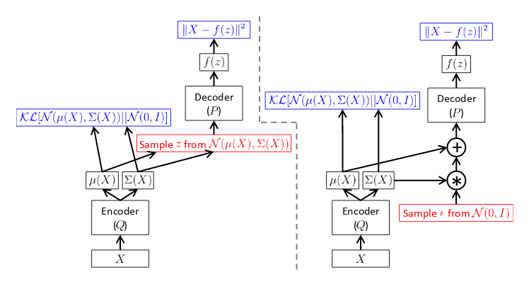(Doersch, Carl 2016)
Performance of VI
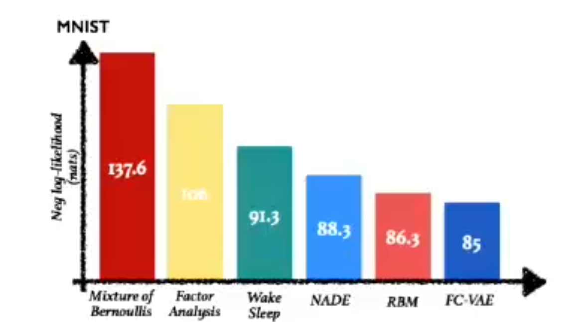Problem with VI: Choice of posteriors
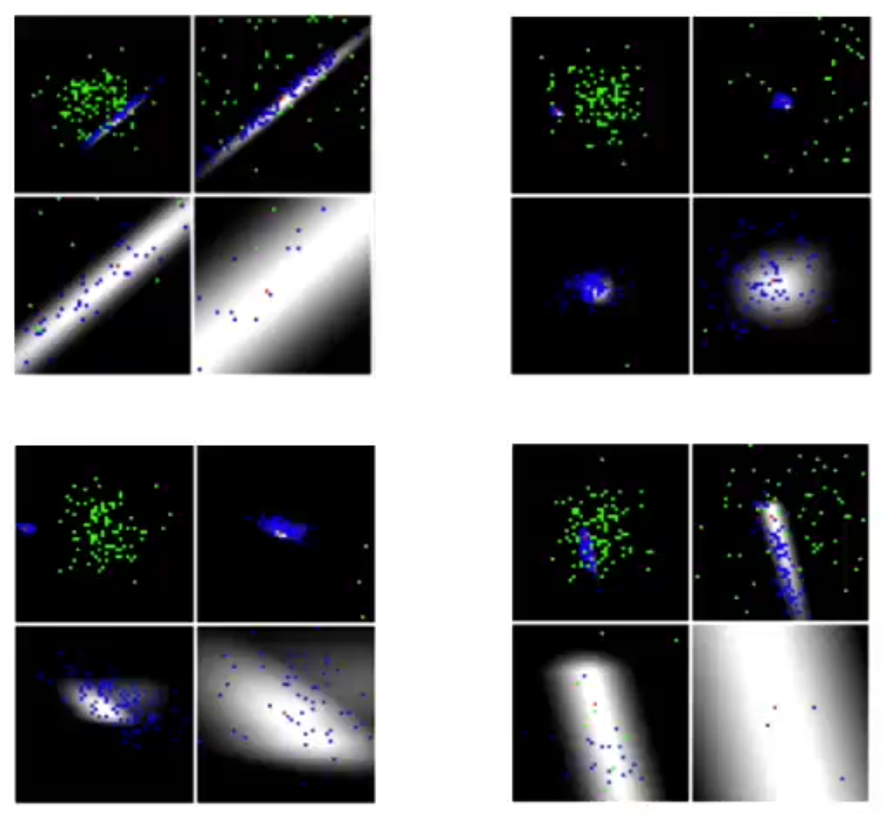Implicit Density Model: GAN
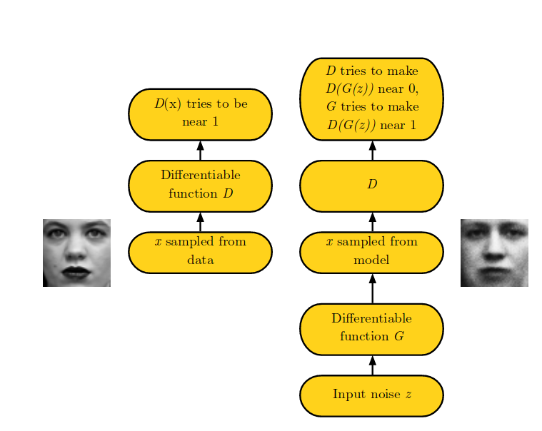GAN: Loss
\begin{align} J^{(D)}(\theta^{(D)}, \theta^{(G)}) = &-0.5 \mathbb{E}_{x \sim p_{data}}[log\ D(x)] \\ &- 0.5 \mathbb{E}_z[log(1 - D(G(z)))] \end{align}
\begin{align} J^{(G)} &= -0.5 \mathbb{E}_z [log\ D(G(z))] \end{align}
- standard sigmoid cross-entropy
- Tries to solve a zero-sum game: $J^{(G)} = -J^{(D)}$
- $V(\theta^{(D)}, \theta^{(G)}) = -J^{(D)}(\theta^{(D)}, \theta^{(G)})$
- $\theta^{(G)*} = \underset{\theta^{(G)}}{arg\ min} \underset{\theta^{(D)}}{\ max} V(\theta^{(D)}, \theta^{(G)})$
Mode Collapse Problem
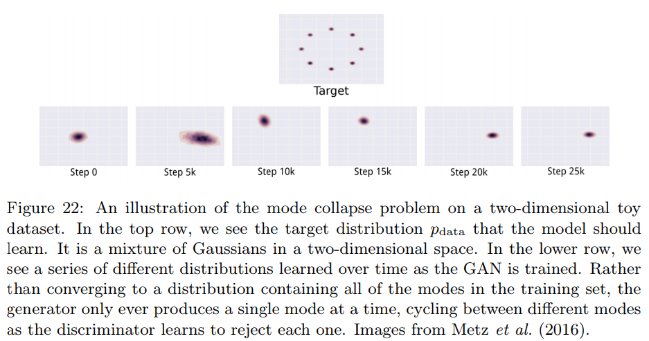Useful loss: Wasserstein GAN
Change 'counterfiet detector' to 'critic'
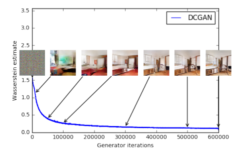Plug and Play GAN Results
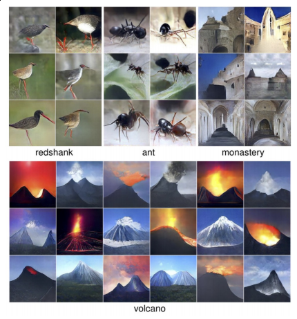Conclusion
- Estimating posterior distributions are hard
- Latent variables in VI models should be complex enough to represent the space
- Transforming discriminative losses into generative ones pose great results
- Implicit density modeling with posterior estimates are the future (eg: ALI, BiGAN)
References
- Frey, B. J. (1998).Graphical models for machine learning and digital communication. MIT Press.
- Frey, B. J., Hinton, G. E., and Dayan, P. (1996). Does the wake-sleep algorithm learn good density estimators? In D. Touretzky, M. Mozer, and M. Hasselmo,editors,Advances in Neural Information Processing Systems 8 (NIPS'95),pages 661{670. MIT Press, Cambridge, MA.
- Dinh, L., Sohl-Dickstein, J., and Bengio, S. (2016). Density estimation usingreal nvp.arXiv preprint arXiv:1605.08803.
- Deco, G. and Brauer, W. (1995). Higher order statistical decorrelation without information loss. NIPS.
- Nguyen, Anh, et al. "Plug & play generative networks: Conditional iterative generation of images in latent space." arXiv preprint arXiv:1612.00005 (2016).
References
- P. Tichavsky, C. H. Muravchik, and A. Nehorai, “Posterior Cramer-Rao bounds for discrete-time nonlinear filtering,” IEEE Trans. Signal Process., vol. 46, no. 5, pp. 1386–1396, May 1998.
- R. J. Ober, “The Fisher information matrix for linear systems,” Syst. Control Lett., vol. 47, pp. 221–226, 2002.
- Kay, Steven M. "Fundamentals of statistical signal processing, volume I: estimation theory." (1993).
- van den Oord, Aäron, et al. "Wavenet: A generative model for raw audio." CoRR abs/1609.03499 (2016).
- Ng, Andrew Y., and Michael I. Jordan. "On discriminative vs. generative classifiers: A comparison of logistic regression and naive bayes." Advances in neural information processing systems 2 (2002): 841-848.
References
- Doersch, Carl. "Tutorial on variational autoencoders." arXiv preprint arXiv:1606.05908 (2016).
- Goodfellow, Ian. "NIPS 2016 Tutorial: Generative Adversarial Networks." arXiv preprint arXiv:1701.00160 (2016).